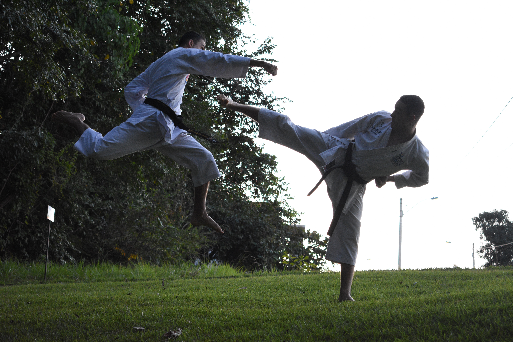

사전적 설명은, 무기 쓰기, 주먹질, 발길질, 말달리기 따위의 무도에 관한 기술. 즉 기술의 실전적 측면을 강조하여 생사를 건 대인(對人)격투술이라는 본질적 가치를 강조한다.
무술(武術)을 용어해설과 내용을 구분해서 살펴보면, 무(武)는 군사기법, 군사기술, 군사체계이고 술(術)은 기법, 기술을 이른다. 내용은 기술의 측면에서 싸움기법이 목적이 된다. 즉 기술적인 성질, 전략적인 작용, 수단적인 방법 등이다.
무술과 무예는 같은 개념인데 선호하는 경향이 다르게 나타나고 있다.
[네이버 지식백과] 무술 [Martial Art, 武術] (태권도 용어정보사전, 2011. 3. 1., 이경명)
